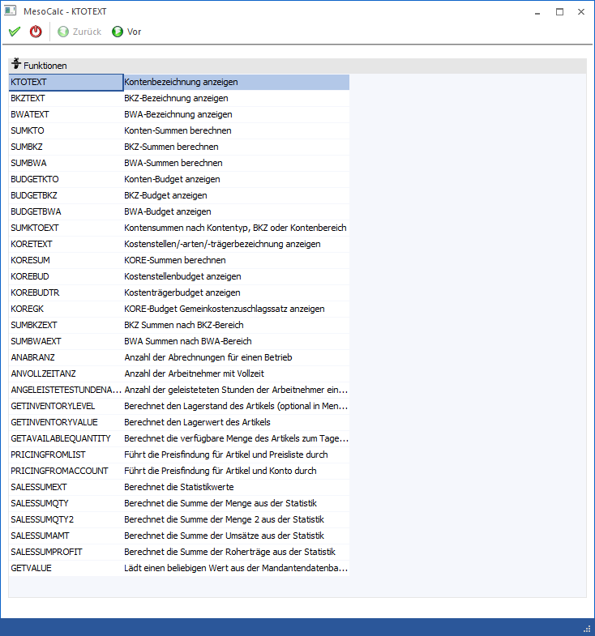
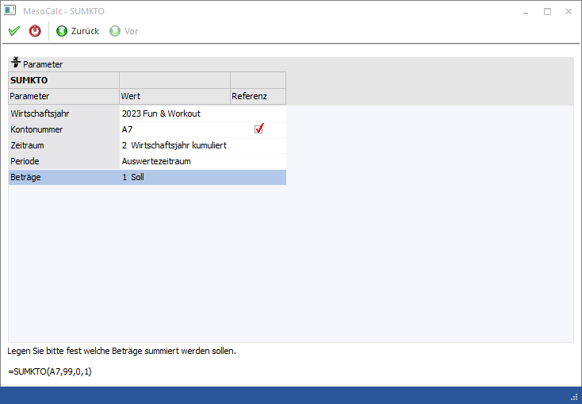
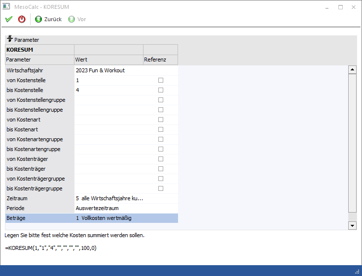

Der MesoCalc-Assistent, der über den Menüpunkt…
1 WinLine INFO
1 Info
1 MesoCalc
… durch Anklicken des Funktionen-Buttons aufgerufen werden kann, hilft dabei, Funktionen in die Tabelle zu übernehmen.

Das Fenster ist in zwei Bereiche geteilt:
ü Funktionen
Aus diesem Bereich
kann die Funktion bzw. die Formel ausgewählt werden, die ausgeführt werden
soll.
ü Parameter
In diesem Bereich
werden die Parameter für die Funktion / Formel eingetragen, die abhängig von der
ausgewählten Funktion / Formel unterschiedlich sein können.
In der Funktionsauswahl stehen folgende Möglichkeiten zur Verfügung:
|
KTOTEXT |
Kontobezeichnung abholen |
|
BKZTEXT |
BKT-Bezeichnung abholen |
|
BWATEXT |
BWA-Bezeichnung abholen |
|
SUMKTO |
Summen eines Kontos errechnen |
|
SUMBKZ |
Summen einer BKZ errechnen |
|
SUMBWA |
Summen einer BWA errechnen |
|
BUDGETKTO |
Budgetwerte von Konten auslesen |
|
BUDGETBKZ |
Budgetwerte von BKZ auslesen |
|
BUDGETBWA |
Budgetwerte von BWA auslesen |
|
SUMKTOEXT |
Kontensummen nach Kontentyp, BKZ oder Kontenbereich |
|
KORETEXT |
Kostenstellen/-arten/-trägerbezeichnung anzeigen |
|
KORESUM |
KORE-Summen berechnen |
|
KOREBUD |
Kostenstellenbudget anzeigen |
|
KOREBUDTR |
Kostenträgerbudget anzeigen |
|
KOREGK |
KORE-Budget Gemeinkosten-zuschlagssatz anzeigen |
|
SUMBKZEXT |
Summen über einen BKZ-Bereich errechnen |
|
SUMBWAEXT |
Summen über einen BWA-Bereich errechnen |
|
GETINVENTORYLEVEL |
Lagerstand eines Artikels |
|
GETINVENTORYVALUE |
Lagerwert eines Artikels |
|
GETAVAILABLEQUANTITY |
Verfügbare Menge eines Artikels |
|
PRICINGFROMLIST |
Preisfindung für Artikel + Preisliste |
|
PRICINGFROMACCOUNT |
Preisfindung für Artikel + Konto |
|
SALESSUMEXT |
Summen aus der Verkaufsstatistik |
|
SALESSUMQTY |
Mengensummen der Verkaufsstatistik |
|
SALESSUMQTY2 |
Mengensummen der Menge2 der Verkaufsstatistik |
|
SALESSUMAMT |
Umsatzsummen der Verkaufsstatistik |
|
SALESSUMPROFIT |
Summe Roherträge der Verkaufsstatistik |
|
GETVALUE |
Beliebiger Wert aus einer beliebigen Tabelle |
Durch Anklicken des VOR-Buttons kann in den Bereich der Parametereingabe gewechselt werden, durch Drücken der ESC-Taste wird das Fenster geschlossen.
In der Parameterauswahl werden die notwenigen Parameter der jeweiligen Funktion / Formel hinterlegt:
Dabei gibt es - abhängig von der Funktion - unterschiedliche Möglichkeiten, die - wenn sie vorhanden sind, immer gleich zu behandeln sind:
Wirtschaftsjahr
Ø Wirtschaftsjahr
Wird das höchste Wirtschaftsjahr ausgewählt (das wird standardmäßig auch vorgeschlagen), dann wird als Formelparameter der Wert 0 (steht für aktuelles Wirtschaftsjahr) übernommen. Mit dieser Einstellung wird auch in weiterer Folge immer das aktuelle Wirtschaftsjahr verwendet (auch nach einem Jahresabschluss).
Datenbereich
Für den Datenbereich - auf welchen Datensatz / welche Datensätze (von - bis - Selektion oder mehrere Kombinationen) soll das Programm zugreifen - (das können ein Konto, eine BKZ, eine BWA, Kostenstellen, Kostenträger, Kostenarten etc. sein) gibt es immer zwei Möglichkeiten:
Ø Wert
Das Feld "Wert" kann unterschiedliche Informationen aufnehmen:
Entweder es kann direkt der Datensatz ausgewählt werden, für den die Formel ausgeführt werden soll, oder es kann eine Referenz (z.B. A3) eingegeben werden. Wenn direkt der Datensatz ausgewählt werden soll, so steht auch eine entsprechende Matchcode-Funktion zur Verfügung, mit der nach allen angelegen Datensätzen gesucht werden kann.
Ø Option Referenz
Wird die Option "Referenz" gewählt, dann kann im Eingabefeld "Wert" die Spalte eingetragen werden (z.B. A7), aus der der Stammsatz gelesen werden soll und zu dem die Formel ausgeführt wird.
BKZ-Gruppe
Ø BKZ-Gruppe
Bei den Funktionen BKZTEXT, SUMBKZ und SUMBKZEXT kann auch noch die BKZ-Gruppe (Auswahl der Gruppe 1, 2 oder 3) selektiert werden.
Zeitraum
Bei den Funktionen, wo ein Wert ermittelt werden soll, kann auch ein Zeitraum definiert werden, wobei hier zwei mögliche Eingabefelder zur Verfügung stehen:
Ø Zeitraum
Aus der Auswahllistbox kann gewählt werden, für welchen Zeitraum die Werte ermittelt werden sollen. Dabei stehen folgende Optionen zur Verfügung:
ü aktuelle Periode
Bringt die
Werte der aktuellen Periode.
ü kumuliert bis aktuelle
Periode
Bringt die Werte vom Wirtschaftsjahrbeginn bis zur aktuellen Periode
(inkl. Eröffnungsperiode)
ü Wirtschaftsjahr
kumuliert
Bringt die Werte des gesamten Wirtschaftsjahres (inkl. Eröffnungs-
und Abschlussperiode).
ü Periode wählen
Wird die Option
"Periode wählen" verwendet, dann kann aus der nachfolgenden Auswahllistbox
"Periode" die Periode gewählt werden, die berechnet werden soll. Sollen mehrere
Perioden berechnet werden, so muss das mit mehreren Funktionen (Einträgen)
gemacht werden, die dann in einem extra Feld zusammengezählt werden.
ü Alle Wirtschaftsjahre
kumuliert
Diese Option ist nur bei KORE-Funktionen verfügbar und bringt alle
Werte aller Wirtschaftsjahre.
ü Alle Wirtschaftsjahre kumuliert
bis aktuelle Periode
Diese Option ist nur bei der Funktion KORESUM verfügbar
und bringt alle Werte aller Wirtschaftsjahre bis zur aktuell ausgewählten
Periode. Buchungen in zukünftigen Perioden werden bei dieser Funktion nicht
berücksichtigt (im Gegensatz zur Funktion "Alle Wirtschaftsjahre
kumuliert").
Ø Periode
In diesem Feld wird standardmäßig "Auswertezeitraum" angezeigt, was auch nicht editiert werden kann. Nur wenn in der Auswahllistbox Zeitraum der Eintrag "Periode wählen" gewählt wird, kann eine einzelne Periode für die Auswertung definiert werden. Abhängig von der Art der Funktion stehen wahlweise die 12 Perioden, die Eröffnungsperiode und die Abschlussperiode zur Verfügung.
Beträge
Bei vielen Funktionen, wo ein Wert ermittelt werden soll/kann, muss definiert werden, welcher Wert ermittelt werden soll. Dabei gibt es unterschiedliche Varianten:
ü Saldo / Soll / Haben
Diese
Option kann nur dann bearbeitet werden, wenn die Funktion SUMKTO oder SUMKTOEXT
gewählt wurde. Damit kann gesteuert werden, welche Werte des Kontos für die
Berechnung genommen werden soll.
ü Budget 1 / Budget 2
Diese
Option kann dann bearbeitet werden, wenn die Funktion BUDGETKTO, BUDGETBKZ oder
BUDGETBWA ausgewählt wurde. Damit kann entschieden werden, ob das Budget1 oder
das Budget2 verwendet werden soll.
ü Vollkosten wertmäßig / Teilkosten
wertmäßig / Kosten mengenmäßig
Diese Option ist nur dann verfügbar, wenn die
Funktion KORESUM ausgewählt wurde. Damit kann entschieden werden, ob die Werte
zu Vollkosten oder zu Teilkosten bzw. wert- oder mengenmäßig ausgewertet werden
sollen.
ü Vollkosten / Teilkosten
Diese
Option ist nur dann verfügbar, wenn die Funktion KOREGK ausgewählt wurde. Damit
kann entschieden werden, ob die Werte zu Vollkosten oder zu Teilkosten
ausgewertet werden sollen.
ü mengenmäßig / wertmäßig
Diese
Option kann nur bei den Funktionen KOREBUDTR hinterlegt werden und gibt an, ob
die Werte mengen- oder wertmäßig ausgewertet werden sollen.
Funktion SUMKTOEXT
In der Funktion SUMKTOEXT sind Optionen vorhanden, die sonst nicht ausgewählt werden können:
Ø Suchbegriff
Hier kann ein Suchbegriff eingegeben werden, um z.B. auf Konten mit einer bestimmten Bezeichnung (z.B. Erlöse) zugreifen zu können.
Ø Volltextsuche
Zusätzlich zum Suchbegriff kann noch definiert werden, ob eine Volltextsuche mit diesem Begriff durchgeführt werden soll, oder ob der Suchbegriff nur am Anfang der Kontenbezeichnung durchgeführt werden soll.
Ø Kontentyp
Über den Kontentyp kann in weiterer Folge auch noch der Umgang der Konten definiert werden, in denen die Suche durchgeführt werden soll.
Ø BKZ
Zuletzt kann für die Auswahl auch noch eine Einschränkung auf eine BKZ durchgeführt werden.
Nachfolgend werden noch zwei unterschiedliche Parameter-Einstellungen dargestellt:
Beispiel: SUMKTO mit einer Referenz auf die Zelle A7, es wird der SOLL-Wert für das WJ ermittelt.

Beispiel: KORESUM mit einer Selektion auf die Kostenstellen 1 - 4 über alle Wirtschaftsjahre bis zur aktuellen Periode mit den Vollkosten Wertmäßig

Buttons
Ø OK
Mit dem OK-Button werden alle vorgenommenen Einstellungen gespeichert und die Funktion ins MesoCalc übernommen.
Ø Ende
Mit dem Ende-Button wird das Funktionen-Fenster geschlossen.
Ø Zurück
Durch Anwahl des Buttons "Zurück" kann in den vorherigen Schritt des Assistenten gewechselt werden.
Ø Vor
Durch Anwahl des Buttons "Vor" kann in den nächsten Schritt des Assistenten gewechselt werden.